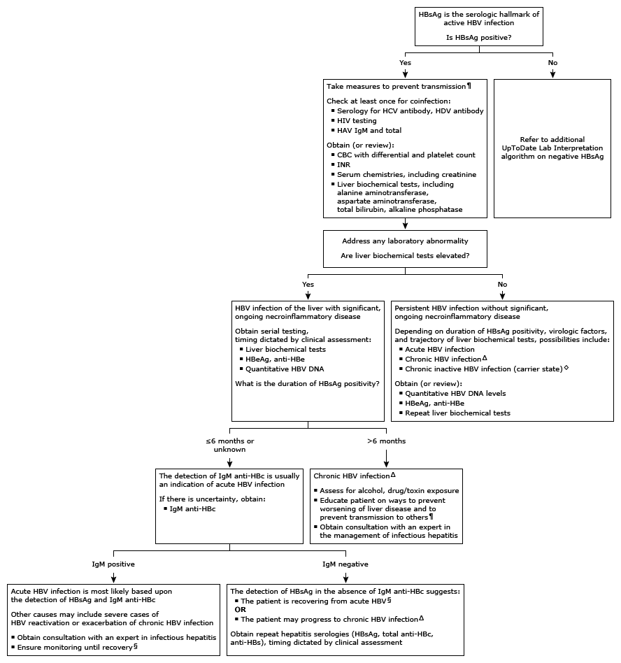

anti-HBc: hepatitis B core antibody; anti-HBe: hepatitis B e antibody; anti-HBs: hepatitis B surface antibody; CBC: complete blood count; HAV: hepatitis A virus; HBeAg: hepatitis B e antigen; HBsAg: hepatitis B surface antigen; HBV: hepatitis B virus; HCV: hepatitis C virus; HDV: hepatitis D (delta) virus; IgG: immunoglobulin G; IgM: immunoglobulin M; INR: international normalized ratio.
* Hepatitis B serologies (HBsAg, anti-HBs, total anti-HBc) are reported as either positive or negative. Interpretation of a specific abnormal test result should be based on the reference range reported with that result.
¶ Appropriate measures to prevent transmission of HBV include:Δ Serologic tests indicative of chronic HBV infection:
◊ Inactive chronic hepatitis is characterized by:
These patients still require monitoring of HBV DNA, which may be undetectable or very low, and alanine aminotransferase, which should remain normal.
§ Recovery is characterized by: